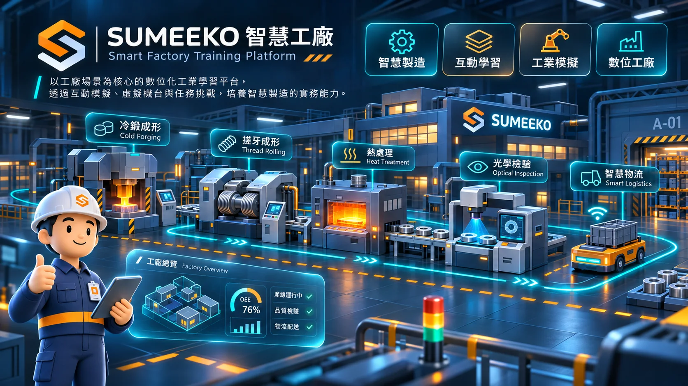
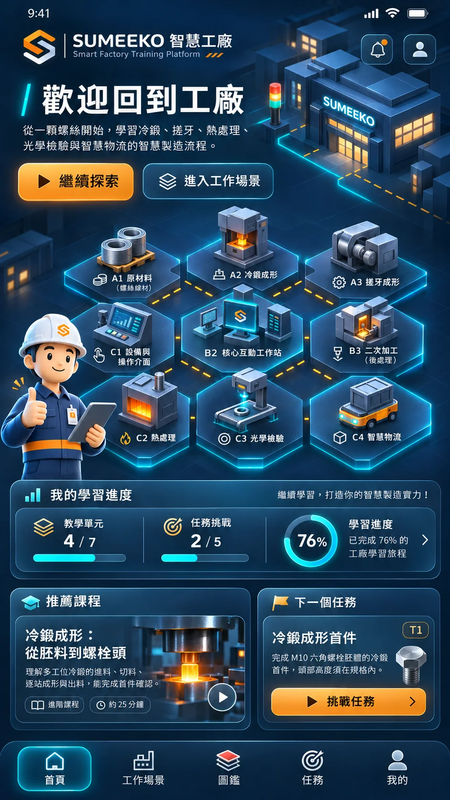
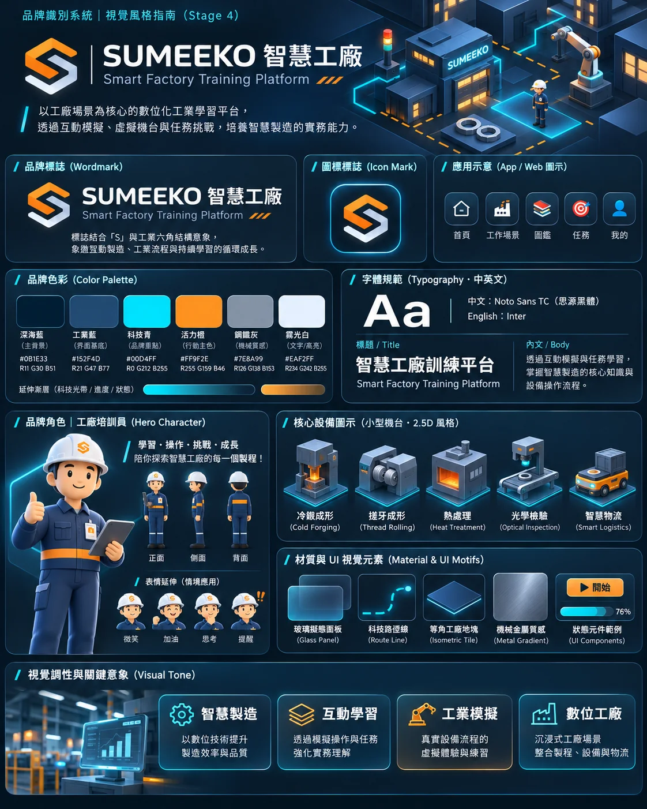
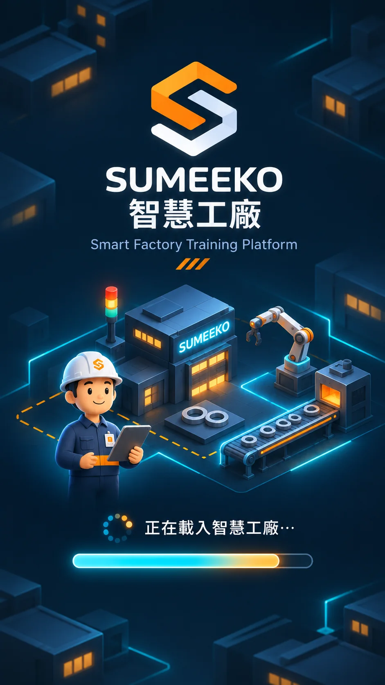

工作場景
以九宮格等角場景探索各個工作站、設備與人物。
Smart Factory Training Platform
以精密製造的實際工序為背景，透過九宮格工廠、機台模擬、工件立體檢視與任務挑戰，建立完整的製程知識脈絡。
獨立製作的非官方教育模擬作品。設備參數僅供互動教學，不可直接用於真實設備。
從探索、操作到驗證，把機械製造流程變成一段有回饋的學習旅程。
以九宮格等角場景探索各個工作站、設備與人物。
理解冷鍛、搓牙、熱處理、品質檢測的設備運作。
旋轉 3D 工件，觀察螺紋、切面、材質與工序變化。
T1～T5 六步驟任務，包含設備檢查與成品判定。
在裝置上保存任務成果、收藏與學習進度。

深藍色工業環境、科技青的互動線條，以及象徵工作流程的橘色按鈕。



本作品以 React、TypeScript 與 PWA 技術呈現。可在支援的瀏覽器安裝到手機，並於首次連線快取完成後離線使用主要功能。
課程與製程數據為教育模擬，不代表任何企業的實際參數。品牌圖像為本專案的原創概念設計。